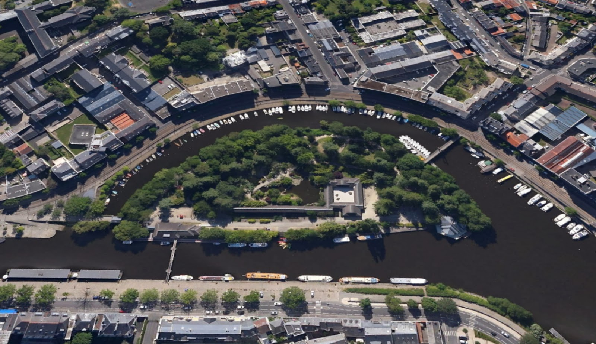
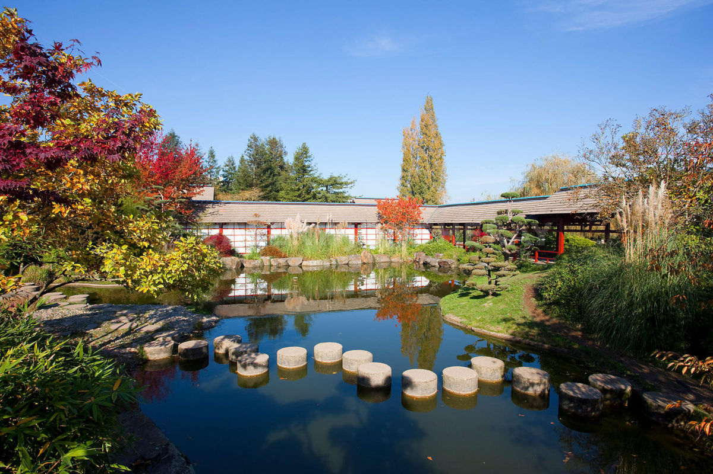
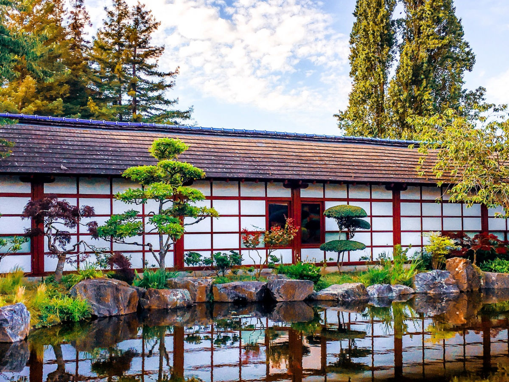
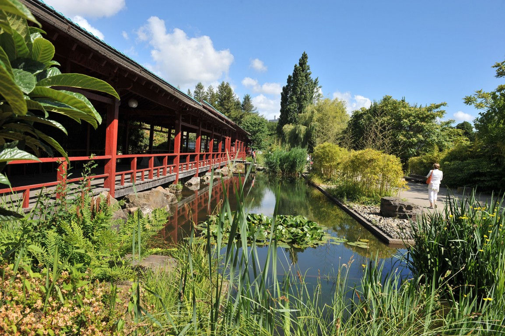

Lieux Insolites
Une collection d'endroits Nantais hors du commun, toutes proportions gardées, cela va de soi. Un assortiment concocté par nous-mêmes, asaisonné par nos visiteurs, que nous espérons toujours plus nombreux!
Ile de Versailles




L’île de Versailles, située sur l'Erdre à Nantes, est une île artificielle et un jardin public. Articulée autour de trois constructions inspirées de l'habitat traditionnel japonais :
La capitainerie, destinée à gérer les activités du port de l'Erdre.
La « Maison de l'Erdre », dont la structure rectangulaire entoure un jardin zen ; elle est utilisée pour accueillir de nombreuses expositions ayant pour thème la rivière elle-même et son environnement aquatique.
Le paysage recréé et structuré par des rocailles, cascades et pièces d'eau est richement planté de végétaux exotiques tels que bambous, cyprès chauves, rhododendrons, camélias et cerisiers du Japon.

Quai de Versailles, Quai Henri Barbusse

Horaires variables, selon saison